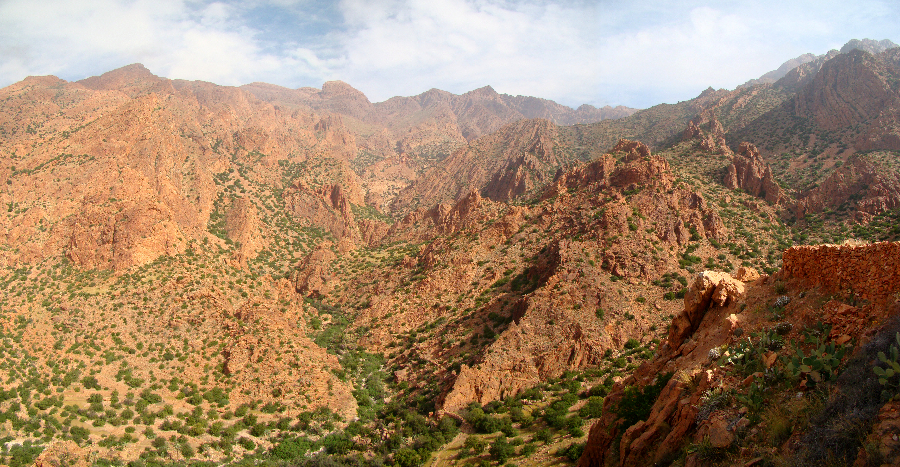
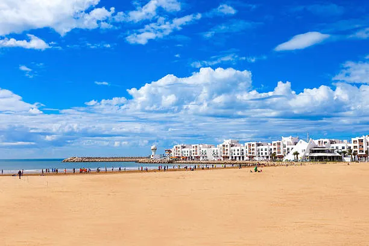
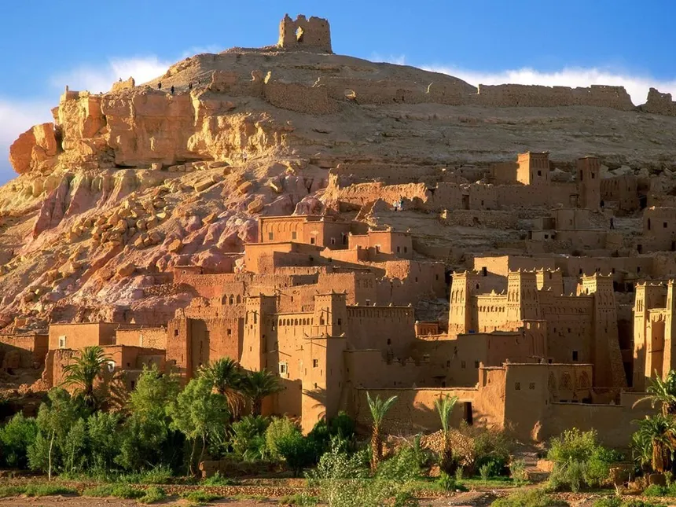
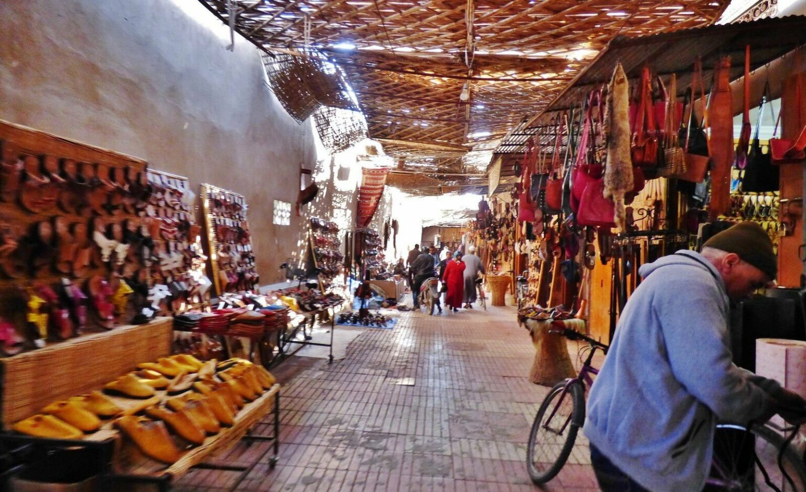

Carte Géographique
Explorez la région avec notre carte interactive présentant tous les points d'intérêt du Souss-Massa.
Découvrir
Lieux à Explorer
Des plages de Taghazout aux kasbahs de Tiznit, découvrez les merveilles cachées de notre région.
Découvrir
Vêtements Traditionnels
Plongez dans l'artisanat amazigh : takchitas colorées, djellabas authentiques et bijoux en argent.
Découvrir
Gastronomie
Savourez les délices du Souss : tajines parfumés, fruits de mer frais et la précieuse huile d'argan.
Découvrir